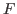

Next: 分散分析（対応あり） Up: JASPについて Previous: 平均の差に関する推測
ここでは、アクティブ・ラーニングを取り入れることが生徒の学習意欲を高めるか検証した実験データ（人工データ）を利用することにする https://okumurin.github.io/jasp/alanova.csv。
下の図は、このデータをJASPで開いたものである。
格納されている変数は以下の通り。
授業形式（Style）と学力水準（Achievement）の水準の組み合わせが合計で6つあるが、いずれにも20人ずつが割り振られている。
このデータを用いて、学習意欲得点を従属変数、授業形式と学力水準を要因（いずれも対応なし）とした分散分析を実行してみよう。
まずは、授業形式 Style のみを考慮した分析を行う。 [ANOVA] メニューから対応のない要因を扱う分散分析として、 [ANOVA] を選択する。
すると、分散分析を実行する画面が提示される。
左のボックスから、Motivation を [Dependent Variables] へ、Style を [Fixed Factors] へ移動させる。 すると、下のように分散分析表が提示される。 授業形式 Style の主効果は統計的に有意となっている（ , ）。
主効果について効果量を得るには、[Additional Options] から [Display] の [Estimates of effect size] に該当する指標にチェックを入れればよい。 ここでは、 と を選択している。 これらの値は、分散分析表の右端に表示される。
主効果が有意であったので、多重比較を行うこととする。 [Post Hoc Tests] で Style を右側のボックスに移し、デフォルトで [Tukey] と [Standard] にチェックが入っている。 あわせて [Effect Size] にチェックを入れると、2群ごとの平均の差に関する検定と標準化された平均の差が返される。
ここでは、学習意欲の平均について Discussion Lecture, PeerTutor Lecture という結果が得られている（検定統計量の符号に注意）。 Discussion と PeerTutor の間には有意な差が確認できていない。 なお、この場合の検定に関する自由度は、上で行った分散分析の誤差平方和 Residual Sum of Squares の自由度（ここでは 117）を用いる。 従って、例えばグループ・ディスカッション群と統制群（講義形式群）の間の有意差は、 , のように報告すればよい。
続いて、授業形式 Style と学力水準 Achievement を投入した二要因分散分析を実行する。 先ほどの分析画面において、Achievement を [Fixed Factors] へ移動させると要因が追加される。 分散分析表は以下の通り。Achievement の主効果、および Style と Achievement の交互作用はいずれも有意とはなっていない。
これらについて効果量を得るには、[Additional Options] から [Display] の [Estimates of effect size] に該当する指標にチェックを入れればよい。 ここでは、、 と を選択している。 これらの値は、分散分析表の右端に表示される。
なお、講義形式（Style）の主効果が有意であることから多重比較に進む場合の手順は一要因の場合と同様である。 その場合の検定における自由度についても、一要因の場合と同じく分散分析表 [Residual] の行を用いればよい。 この例では、df = 114 である。
ここでは交互作用が有意ではなかったのであるが、単純主効果の検証に移ることにしよう。 [Simple Main Effects] メニューを開き、単純主効果を検証する要因を [Simple Effect Factor] へ、どの要因の水準ごとにそれを検証するかを [Moderator Factor 1] に移動させる。 ここでは、Achievement の単純主効果を Style の各水準で検証することとして、Achievement を [Simple Effect Factor]、Style を [Moderator Factor 1] に移動させる。
結果は以下の通り。授業にグループ・ディスカッションが取り入れらた場合に学力水準の単純主効果が有意となっている。
この表では検定統計量  が報告されているが、誤差の自由度（平方和、平均平方）は記載されていない。 ここで用いられている誤差は、主効果と交互作用を検定した分散分析表の最終行に表示されているものである。 従って、誤差の自由度はこの場合 ということになり、例えば授業形式（Style）が Discussion である場合の学力水準（Achievement）の単純主効果の検定結果は、 , と記載することになる。
以下に、この単純主効果の検定に関する部分を分散分析表にまとめたものを示す。 値について計算が正しいか確認しておこう。 は「検定したい効果の平均平方 / 誤差の平均平方」であるから、ここでは 34.225 / 6.454 (=5.303) となる。
| 要因 | 平方和 （Sum of Squares） | 自由度（df） | 平均平方（Mean Square） | ||
| 学力水準（Discussion） | 34.225 | 1 | 34.225 | 5.303 | .023 |
| 誤差（Residual） | 735.750 | 114 | 6.454 |
[Descriptive Plots] メニューから [Factors] ボックスにある要因のうち、[Horizontal Axis] に Style を、[Separate Lines] に Achievement を移動させると、今回のデータを図示することができる。 これを見ると、グループ・ディスカッションを取り入れることは学力水準の高い生徒に限って効果的であるという結果となっていることがわかる。
なお、ここではデフォルトで水準がアルファベット順に "Discussion
 Lecture
Lecture
 PeerTutor" という並びとなっているが、これは変更することができる。
分析実行画面の左端にある三角形をクリックするとデータ画面に戻る。
ここで、先頭にある変数名 Style をクリックすると、下のように水準の順番をカスタマイズする画面が表示される。
PeerTutor" という並びとなっているが、これは変更することができる。
分析実行画面の左端にある三角形をクリックするとデータ画面に戻る。
ここで、先頭にある変数名 Style をクリックすると、下のように水準の順番をカスタマイズする画面が表示される。
ここで、Lecture を選択して右の上向き三角をクリックすると、水準が "Lecture
 Discussion
Discussion
 PeerTutor" に更新される。
PeerTutor" に更新される。
右の [x] マークをクリックすると、もとのデータ画面に戻る。 先ほどのプロットをもう一度確認すると、以下のようにプロットが更新されている。
Taichi Okumura